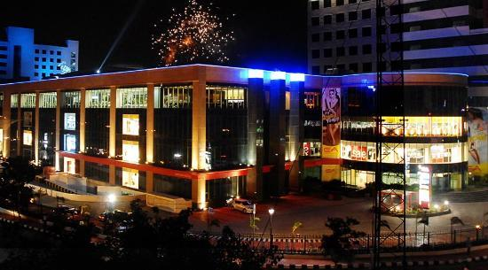

mahabalipuram also known as Mamallapuram is a town in Kancheepuram district in the Indian state of Tamil Nadu. It is around 60 km south from the city of Chennai.

Express Avenue Tamil: எக்ஸ்ப்ரெஸ் அவென்யூ is a shopping mall in Chennai promoted by Express Infrastructure, a subsidiary of The Indian Express Group. It is home to the largest gaming arcade in South India.